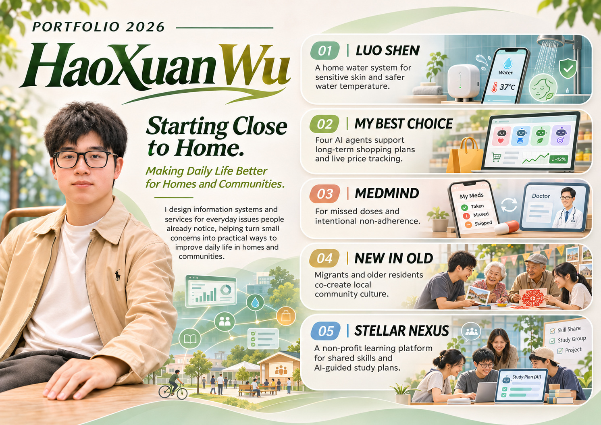

HaoXuan Wu — Starting Close to Home

02 / ApproachFrom everyday
From everyday
questions to
working systems.
These projects explore how information and interaction design can support decisions, relationships, community participation and daily life.
Each project has its own methods, interface and technical requirements. This portfolio brings them into one place without making them look or behave the same.
Project case studies and interactive demos are published independently as they become ready.